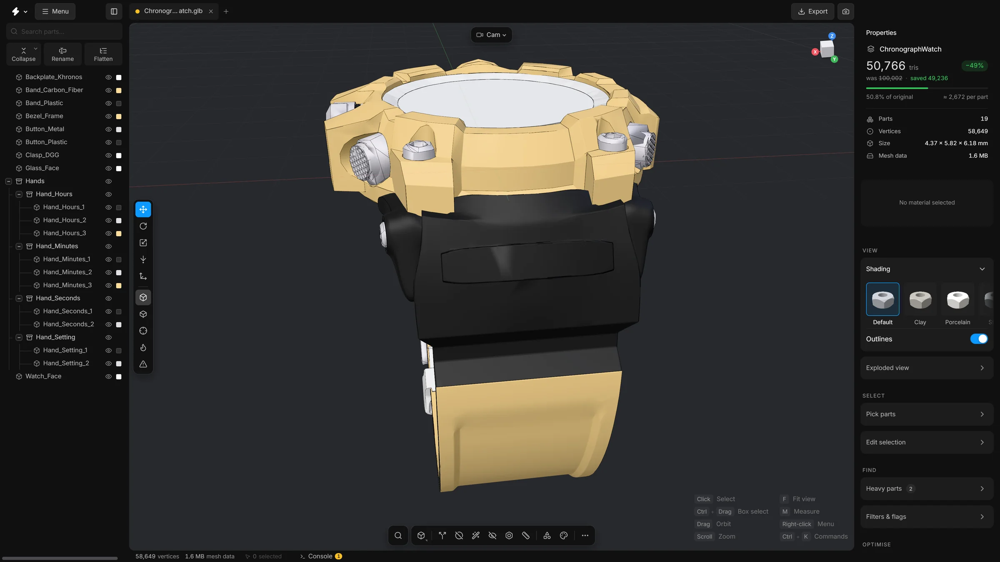

01
One button, half the triangles
Smart optimise runs every clean-up the app has, in order: empty and broken parts, hidden parts, fasteners, tiny parts, holes in flat faces, and then a reduction to the target you set. On this derailleur it took 1,103,373 triangles down to 552,115 and showed what it had saved. One Ctrl+Z puts it all back.